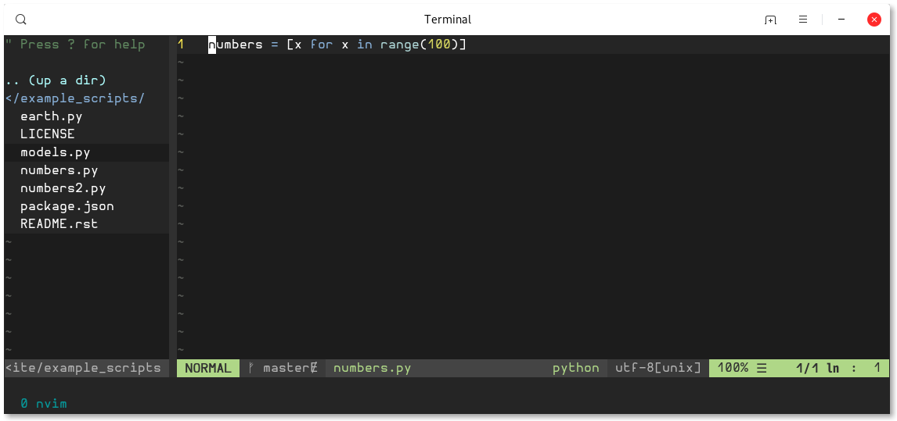

Using Vim or Neovim?
It doesn't matter anymore!! This config now works on both editors :)
This is my personal Vim and NeoVim configuration, built according to my personal preferences, without any justification to think it's the best possible vim configuration. If you like it, great! :) It's mainly oriented to python software development, but many of its features are useful for other languages and editing tasks.
Some of the best features (full list and basic help here):
Install for Vim | Install for NeoVim | Upgrade
0) You will need Vim 8.0 or newer, and compiled with python support
(check for python support with vim --version | grep +python).
Also, your .vim folder should be empty.
If you have one, rename it or move to a different location (to keep a backup, just in case you want to go back).
1) Install the required dependencies:
sudo apt install git curl python3-pip universal-ctags ack-grep sudo pip3 install pynvim flake8 pylint isort jedi
2) Download the config file
and save it as ~/.vimrc (super important to use that exact name).
3) Open Vim and it will continue the installation by itself. Wait for it to finish... and done! You now have your new shiny powerful Vim :)
0) You will need NeoVim 0.3 or newer. For Ubuntu I recommend installing it using the app.image version, which can be downloaded here.
More info and alternative methods here.
Also, your .config/nvim folder should be empty.
If you have one, rename it or move to a different location (to keep a backup, just in case you want to go back).
1) Install the required dependencies:
sudo apt install git curl python3-pip universal-ctags ack-grep sudo pip3 install pynvim flake8 pylint isort jedi
2) Download the config file
and save it as ~/.config/nvim/init.vim (super important to use that exact path and name).
3) Open NeoVim and it will continue the installation by itself. Wait for it to finish... and done! You now have your new shiny powerful NeoVim :)
If you have an older version of fisa-vim-config and want to upgrade it to the latest release, follow these steps:
1) Dowload the new version of the config file and replace the old one you have.
2) Install the dependencies listed in the install section.
3) Open Vim or NeoVim and run:
:PlugClean :PlugInstall :PlugUpdate
This will remove plugins no longer used, install any new plugins, and update the existing ones to the last versions. It can be useful to look at the changelog.
Optional: Fancy Symbols
You can either have a plain old terminal editor using old boring characters, or you can have an awesome terminal editor able to show all kinds of fancy symbols in the file explorer and the status bar in the bottom (hover to compare):

You only need to install any font from NerdFonts
(I use Agave or Hurmit, they look great), configure it as your terminal font,
and then enable the fancy_symbols_enabled setting at the beginning of the config
(change the 0 to 1). Restart the editor to see the change.
Optional: Transparent Background
You can either use the background of each theme, or the background color of your own
terminal application. By default the config does the former, but you can control it
by setting the transparent_background setting near the top of the config.
Detailed docs
Python and coding
-
Smart autocompletion as you type, sometimes using python instrospection (completion of module names, instance methods and attributes) and sometimes text-based (used words). And it does fuzzy autocompletion too! Fuzzy autocompletion means you don't need to type the exact word, typing "satmod" will suggest stuff like "SatelliteModel".
-
Fuzzy file, code and command finders (like Textmante or Sublime Text). "Fuzzy" means you can type approximately what you want, and it will find it anyway (for instance, "satmod" will find stuff like "SatelliteModel"). Probably one of the most life-changing features.
,e : file finder, with recursive (subdirectories) and fuzzy file name matching. You can also open the files in a new tab with Ctrl-t.
,g : symbol finder (classes, methods, variables, functions, ...) in the current file. ,G does the same but on all opened files, ,wg and ,wG are variants that search the current word under the cursor.
,c : command finder (internal vim commands, or custom commands).
,f : "any text" finder in the current file. ,F does the same but on all opened files, ,wf and ,wF are variants that search the current word under the cursor. -
Some other neat Python magic spells:
,d : go to definition of the thing under the cursor. ,D does the same, but oppening a new tab.
,o : find occurrences of the thing under the cursor.
Shift-K : show docstring of the thing under the cursor.
-
F4 : toggle classes/module browser that lists classes, functions, methods, and such of the current file, and navigates to them when ENTER is pressed.
-
Error and style checking of code (detects syntax errors, wrong variable names, unused imoprts, pep8 violations, etc). Works on several languages, highlights the errors in the code, at the line number bar, and the status bar. You can open a summarized list of errors with :lwindow .
-
Git integration:
Icons are shown on each changed line to indicate uncommited changes.
Ability to jump between changes to current file with \sn and \sp.
Useful commands to interact with repos, such as :Gstatus, :Gblame, :Glog, :Gcommit, etc. Or simply use :Git with any git command you want to use. -
F2 : toggle pending tasks list (comments in the current file starting with "TODO", "FIXME", etc).
-
,r : grep code recursively using Ack!
,wr : does the same, but searching the current word under the cursor. -
Utilities to work with indented code:
Indentation defined text objects for vim's editing language, named i. For instance, you can change an entire indented code block with cii, or the indented block and its header line with cai (also works with yank, delete, etc).
Indentation based movements: go to the header of an indented block with [-, to the end of the it with ]-, and more. More info. -
Surround actions for vim's editing language. For instance, you can change double quotes to single quotes with cs"'. More info.
-
\ci : comment and uncomment code (current line or selection).
-
Utilities to work with HTML:
CSS colors are painted with their actual color, no more guessing :)
Jump between opening/closing tags in HTML and XML with % (just like with parenthesis and other open-close pairs).
HTML zen coding: generate lots of html code writing simple and short expressions. For instance, insert:#books>ul>li.book*5>a
Then press Ctrl-y , and that will be converted to this:
More info.<div id="books"> <ul> <li class="book"><a href=""></a></li> <li class="book"><a href=""></a></li> <li class="book"><a href=""></a></li> <li class="book"><a href=""></a></li> <li class="book"><a href=""></a></li> </ul> </div> -
Smart autoclosing of (, [, and {.
-
Some extra Python goodies when working with Python files, like better indentation and automatic removal of trailing spaces on save.
Add ipdb breakpoints with \b, and automatically organize your imports with :Isort.
UI and usability
-
Beautiful status line with useful information about file type, encoding, position, git branch and status, errors, etc. When editing python files, it even shows the current function or class.
-
F3 : better project browser. You can also open the location of the current file with ,t.
-
Utilities and mappings to work with tabs and splits:
Quick tab navigation using Alt+horizontal arrows. And tt as a shortcut to open a new tab.
Quick window chooser with -. -
Beautiful colorscheme, and use of 256 colors when possible.
-
Some useful vim goodies enabled/configured:
Highlight and count search results. Line numbers. Keeping the cursor 3 lines away from the screen border while scrolling. Shell-like autocompletion of commands and paths (autocomplete the common part and show matching options). Syntax highlighting on by default. -
Cycle through your yank (clipboard) history with Ctrl-p and Ctrl-n.
Other
-
Plugins managed using Vim-plug! You can easily install or remove plugins. More info.
-
Automatically load .vim.custom configs in your projects when opening vim (it searches all the parent directories until it finds a custom configs file, or the root dir).
-
Python interpreter and other shells inside vim using :ConqueTerm python, :ConqueTerm bash, etc. This is Vim specific. NeoVim has its own native alternative.
-
Temporary files in better locations, under ~/.vim/dirs (only for Vim, as NeoVim has better default dirs).